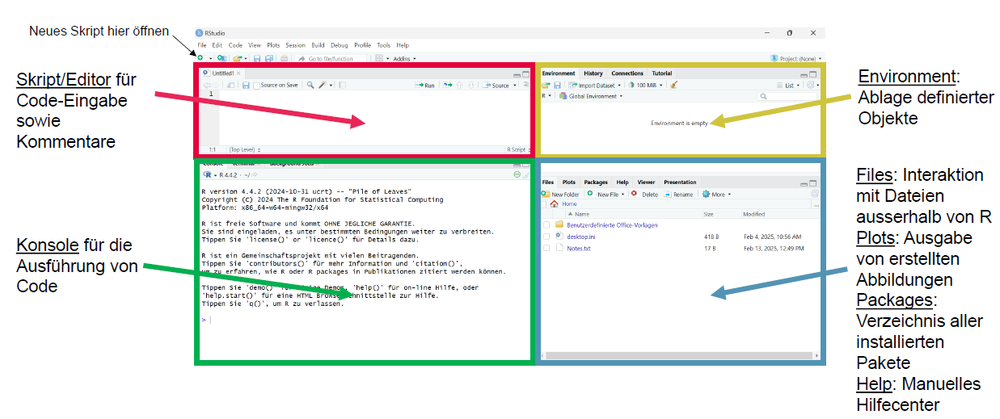
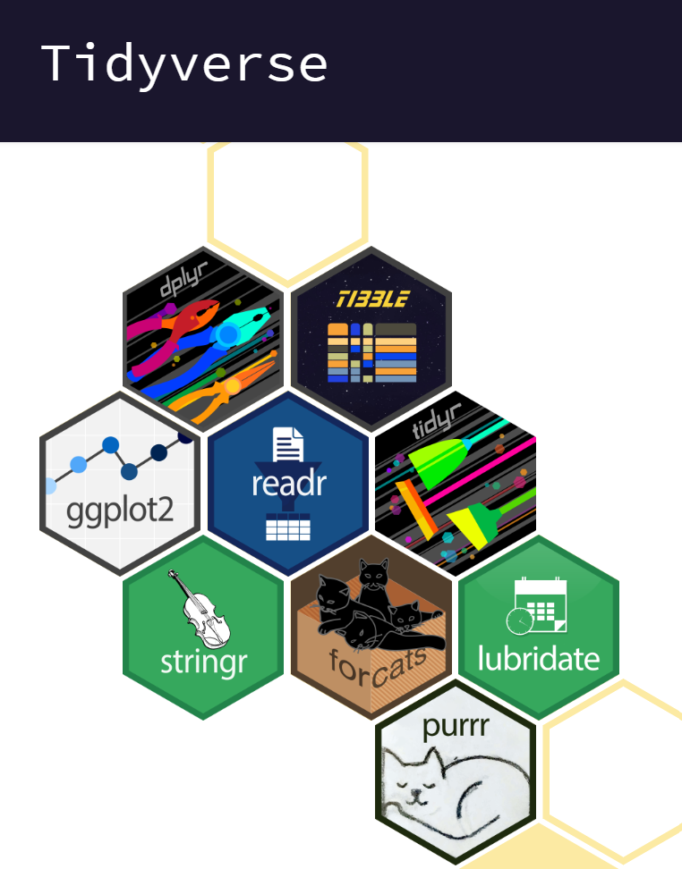

install.packages("tidyverse")Hands On 1
Hands On - Codings Basics (Einheiten 1 und 2)
Bei Bedarf finden sich hier nochmal die Slides zur EH1:
Und EH2
Installation R und R-Studio
Installiere R und RStudio:
Installation von R – neueste Version 4.5.1: https://stat.ethz.ch/CRAN/
Installation von RStudio (Version 2025.09.0): https://posit.co/download/rstudio-desktop/
Du weisst nicht was mit R auf sich hat? Hier ist eine Kurzerklärung: https://methodenlehre.github.io/einfuehrung-in-R/
Einstellungen
RStudio öffnen & Einstellungen vornehmen: Unter «tools» –«global options» die unter 1.1. beschriebenen Einstellungen vornehmen:
https://methodenlehre.github.io/einfuehrung-in-R/chapters/01-workflow.html
- Neues Skript öffnen & orientieren
RStudio Oberfläche
Im folgenden machen wir uns vertraut mit der Oberfläche von RStudio:

- Skript für Code-Eingabe sowie Kommentare
- Konsole für die Ausführung von Code -> Teste einfache mathematische Operation in dieser; reproduziere diese mittels Skript
- Rechts oben: Environment & History
- Rechts unten: Files, Plots, Packages und Help Viewer
Pakete installieren und laden
Tidyverse ist ein Meta-Paket, das mehrere Pakete umfasst
Pakete installieren (nur 1x notwendig) -> führe diesen Code in der Konsole aus
Paket laden (innerhalb des Skriptes, bei jedem Neustart von R notwendig)
library(tidyverse)── Attaching core tidyverse packages ──────────────────────── tidyverse 2.0.0 ── ✔ dplyr 1.1.4 ✔ readr 2.1.5 ✔ forcats 1.0.1 ✔ stringr 1.5.2 ✔ ggplot2 4.0.0 ✔ tibble 3.3.0 ✔ lubridate 1.9.4 ✔ tidyr 1.3.1 ✔ purrr 1.1.0 ── Conflicts ────────────────────────────────────────── tidyverse_conflicts() ── ✖ dplyr::filter() masks stats::filter() ✖ dplyr::lag() masks stats::lag() ℹ Use the conflicted package (<http://conflicted.r-lib.org/>) to force all conflicts to become errors
Tipp: Pakete regelmässig updaten mit z.B. update.packages()
Operatoren kennenlernen
a. Nutze R als Taschenrechner
123+456144*11210/3Quadriere 420
Ziehe die Quadratwurzel aus 146 mit der Funktion
sqrt()Berechne den Rest der Division 10/3 mit dem Modulo Operator:
%%
Arithmetische Operatoren und Funktionen in R, z.B.
| Zeichen | Bedeutung |
|---|---|
| + | Addition |
| - | Substraktion |
| * | Multiplikation |
| / | Division |
| sqrt(x) | Quadratwurzel |
| abs(x) | Betrag (absoluter Wert) |
| x %% y | Modulo (x mod y) 5 %% 2 = 1 |
| ^ | Potenz |
Erste Zuweisungen/Variablen definieren
Weise den Wert 5 der Variable
xzu mit dem Operator<-Weise eine beliebige Zahl der Variable
yzu und dividiere dannxdurchy. Speichere dieses Ergebnis in der Variablez.Schaue dir das Ergebnis in deinem Environment an. Lass dir das Ergebnis auch in der Konsole ausgeben. Das Environment findest du oben rechts, die Konsole ist unter deinem Skript.
Erstelle zwei Variablen: Eine mit deinem Vornamen und eine mit deinem Nachnamen. Solche “character” Variablen musst du in Anführungszeichen setzen
""Kombiniere deinen Vor- und Nachnamen zu deinem vollen Namen mittels
paste. Speichere diese Variable alsvoller_name.
Vektoren definieren
Definiere einen Vektor «first_vector» mit den Zahlen 100, 80, 54, 73. Einen Vektor definiert man so:
first_vector <- c(...)Wende den Befehl
boxplot()auf deinen Vektor anBerechne die Summe
sum()und den Mittelwertmean()von deinem VektorMultipliziere deinen Vektor mit
*2und schaue dir das Ergebnis an.
Die wichtigsten Operatoren und Funktionen in R: https://methodenlehre.github.io/einfuehrung-in-R/chapters/02-R-language.html
Statistische Funktionen, die man auf Vektoren anwenden kann, z.B.
| Funktion | Bedeutung |
|---|---|
| mean(x, na.rm =FALSE) | Mittelwert |
| sd(x) | Standardabweichung |
| var(x) | Varianz |
| median(x) | Median |
| sum(x) | Summe |
| min(x) | Minimalwert |
| max(x) | Maximalwert |
| range(x) | Minimal - und Maximalwert |
Logische Operatoren
Teste ob die Zahl 5 größer als 2 ist –> TRUE or FALSE?
Teste ob 6 ungleich 8 ist –> TRUE or FALSE?
Subtrahiere 80 von 50 und speichere das Ergebnis in einer Variable namens «diff_score».
Berechne mit
abs()den absoluten Wert von «diff_score» lasse dir diesen mitprint(diff_score)in der Konsole ausgeben.
Logische Operatoren, z.B.
| Zeichen | Bedeutung |
|---|---|
| == | gleich |
| != | ungleich |
| > | grösser |
| >= | grösser gleich |
| < | kleiner |
| <= | kleiner gleich |
| | | Logisches Oder |
| & | Logisches Und |
Nachvollziehbarkeit von Code
Kommentare
Informative Kommentare im Code sind elementar für die Nachvollziehbarkeit.
Schreibe einen Kommentar indem du ein
#verwendest.Code der nach einem
#steht wird nicht ausgeführt. Setze ein#vor eine Codezeile und führe sie aus und beobachte was passiert.
Benennung von Variablen
Es gibt verschiedene Konventionen, wie man Variablen benennen kann.
Einige wichtige Grundsätze dafür sind:
Namen können aus Buchstaben, Zahlen sowie den Zeichen
_oder.bestehen.Sie müssen mit einem Buchstaben beginnen und dürfen keine Leerzeichen enthalten.
Sonderzeichen und Großbuchstaben sollten vermieden werden.
Keine Namen verwenden, die bereits für Funktionen reserviert sind (z. B.
mean()).Der Name sollte den Inhalt der Variablen möglichst gut beschreiben → Reproduzierbarkeit; clarity instead of brevity.
Am besten englische Bezeichnungen verwenden, um internationalen Standards zu folgen.
Übung:
Definiere eine neue Variable nach snake_case.
Definiere eine zweite Variable nach CamelCase.
In unserem Seminar verwenden wir den snake_case.
Für fortgeschrittene R-Nutzer:innen
Speichere die beiden höchsten Werte aus «first_vector» in einer neuen Variable ab (Tipp: verwende
sort())Erstelle einen Vektor mit Werten von 0-1000 in 10er Schritten (Tipp: suche nach der Funktion
seq()Ziehe zufällig eine Zahl aus diesem Vektor
Generiere einen Vektor, der aus 50 Wiederholungen der Zahl 3 besteht
Tipps zu diesen Aufgaben findest du bei Bedarf hier: https://methodenlehre.github.io/einfuehrung-in-R/chapters/02-R-language.html (Kapitel 2.1)
Tipp: Suche nach der Dokumentation der folgenden Funktionen: sort(), seq(), sample, rep().
Die Dokumentation kannst du mittels ?Funktionsname aufrufen.
Datentypen
numeric vectors: werden in integer (ganze Zahlen) und double (reelle Zahlen) unterteilt, z.B.
numerical_vector <- c(1, 2.5, 4)character vectors: bestehen aus Zeichen, welche von Anführungszeichen umgeben werden, z.B.
text_vector <- c("Hello", "World")logical vectors: Elemente dieses Typs können nur 3 Werte annehmen: TRUE, FALSE oder NA
log_vector <- c(TRUE, FALSE, TRUE)
Vektoren müssen aus denselbsten Elementen bestehen, d.h. z.B. numeric und character können nicht gemischt werden. Vektoren werden meist mit c() erstellt.
Zusätzliche Übungen:
ℹ️ Hinweis: Hilfestellungen zu den Übungen findest du hier.
Nicht alle benötigten Funktionen sind explizit erwähnt. Nutze bei Bedarf eine Suchmaschine, um passende Befehle zu finden.
Überprüfen von Datentypen – palmerpenguins
Lade den öffentlich in R verfügbaren Datensatz palmerpenguins mit den folgenden Befehlen:
install.packages("palmerpenguins") # nur einmal nötig library(palmerpenguins)
my_penguins <- penguins Datensatz inspizieren
Wie viele Variablen (Spalten) sind enthalten?
Wie viele Beobachtungen (Zeilen)?
Überblick über den Datensatz
Nutze verschiedene Befehle und vergleiche die Ergebnisse:
Verwende die Hilfefunktion ?funktionsname um dir zeigen zu lassen welche Argumente die Funktionen benötigen.
head()glimpse()str()penguinssummary()
👉 Was sind die Unterschiede zwischen den Befehlen?
Datentypen überprüfen
Welchen Datentyp haben diese Variablen?
islandbody_mass_gspecies
Tipp: Googeln
Logisches Abfragen
Überprüfe, ob
bill_depth_mmein numerischer Vektor ist.Gib die Antwort als logischen Wert aus (
TRUEoderFALSE) und speichere sie in einer neuen Variable.Prüfe anschließend, ob diese neue Variable selbst ein logischer Vektor ist.
Am Ende deiner Übungen - vergiss nicht dein Skript abzuspeichern! :-)
Gib diesem einem Namen, der Maschinen und Mensch-lesbar ist, siehe Kapitel 6.1.3 hier: https://r4ds.hadley.nz/workflow-scripts